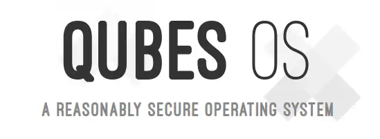

Living with an Automated Laptop Build
I wrote about why I'd automated my laptop build last week. This post concludes this short series, introducing a walkthrough video and answering some questions about the choices I've made and how I've improved reliability and sustainability.
- Thanks to
 for supporting this content.
for supporting this content.
The Promised Walkthrough Video¶
Automated Linux/Ansible Install in 6 minutes is the end-to-end video of an installation I promised last time. Twenty-one minutes by the clock on the wall, end to end, with less than five interactive. It'll give you an idea of how it works and what you might expect. I didn't want to jabber on too much in the video, so I left details about why I made some of my choices and how I solved problems around reliability for this post instead.
Why Xubuntu?¶
I used the Xfce Fedora spin until March 2022 before switching to Xubuntu. It's not obvious to me from the main documentation, but it prioritises pushing the community forward over, for example, compatibility. This was demonstrated by the switch to cgroups v2 in 2022:
{kind=link}
Fedora is known for being a leading platform for the enablement of new kernel functions, and this would continue its legacy. The world will eventually move to CGroupsV2 and Fedora should lead the way.
Docker did not work with cgroups v2 and I was using Docker with my client team. I couldn't just turn up on the following Monday morning with "Good News Everyone! Fedora broke Docker on my workstation so let's come up with a plan...". Whilst I appreciate Fedora pushing the industry forward, it wasn't a great fit for a working consultant, who wants to keep up to date and avoid disruption with clients.
{kind=link}
Time for a change, and Ubuntu seemed to fit the bill. A couple of years later and I have no complaints - my automation has been more reliable running over a Ubuntu-based distro. The only concern I had greater than reliability was security. In that respect, Canonical and Ubuntu fit the bill, making statements on security that let me relax a bit.
Your Ubuntu software is secure from the moment you install it, and will remain so as Canonical ensures security updates are always available on Ubuntu first.
Why Xfce instead of the default Ubuntu desktop? Probably, if I'm honest because I'm old and stuck in my ways. I expect a desktop that is laid out and behaves like a more modern version of Windows 95, and Xfce gives me that. It's an official Ubuntu Flavour, so I have no security concerns.
Why Not Qubes?¶
{kind=link}

Given my focus on security, it feels worth mentioning Qubes, "A reasonably secure operating system" based on VMs. I looked at it back in - I think - 2019 and I was impressed by the experience, I decided against it as a serious option for for my needs for a couple of reasons.
First up - I wanted complete segregation between my stuff and clients (and between different clients when I work with more than one at a time). At the time I couldn't find a way around a single hard disk encryption password, even if the VMs operating over the top were segregated. Maybe there was a way around that, but it seemed much simpler and safer to just use separate machines, or make a client-specific install on a fast external hard disk, and boot that that when needed.
The other, less important, problem was hardware. I typically run 16GB of RAM in a workstation and have no issues. Qubes is memory-hungry with the multi-VM overhead. I suspect Qubes is solving a slightly different problem than the kind of client partitioning I wanted. So... Xubuntu it is, and I have no regrets so far.
Why Not Automate the OS Installation?¶
I looked into automating the actual OS installation back on Fedora. It involved providing an "answers file" to drive the installer, but required some infrastructure to provide that file as part of the installation. It seemed like a lot of effort for little benefit given how short and simple that part of the process takes - so I dropped it and it's completely failed to annoy me enough to make me look at it since.
Why Ansible?¶
{kind=link}
Glad you asked. Back in the day, I tried the obvious things - dotfiles things, custom scripts. There's something of a history of my early efforts on GitHub, like this repo where I backed up my Cinnamon (a fancier Linux desktop I was using around 2017) settings. Note to self - really need to go through my repos and do some archiving!
Anyway, I ended up with Ansible. It won out for a few reasons:
- agentless - it's just a program I run, does what it does, and shuts down. Nice and simple
- has a set of idioms and a programming model I can use instead of making up my own
- declarative and YAML - I'm used to working this way and it simplifies the programming model
- has lots of built-in capabilities for stuff I need to do, like managing blocks of lines in files, installing packages, etc
- has a way of describing a dependency between two things, to make sure they happen in the right order
- available as a standard Ubuntu main package, so covered by Ubuntu security updates
- ~~the Ansible Galaxy sharing hub~~
- ha ha no, I'll make do with the stuff that's part of Ansible core thanks. Enough supply chains already!
It took me a little while to connect the Ansible "role" concept with my needs, but again I have no regrets. It's proven lightweight, simple enough to work with and reliable in practice.
Test Automation¶
Reliability was a real problem in the early, Fedora days. Much of that was on me - I was still figuring my approach out and I had no test automation in place. That meant each time a release rolled every six months, it was an adventure. Reinstall the machine based on the new distro release... apply updates... run the Ansible playbook... more often than not, something would fail and I could lose hours sorting it out. At least once I'd sorted it out I could be confident the second laptop install would be fine. Mostly.
GitHub Actions were a game-changer. You don't have access to the VM the action is running, but you can run it in a container. That means I can run the install process for everything that:
- doesn't depend on a desktop environment, i.e. Xubuntu config
- everything that doesn't need containers itself, i.e. docker-rootless
My test_install workflow sets a parameter to skip things that don't work in a container, and everything else is exercised in a matrix of the last LTS and latest release. I have that running weekly on a schedule for early warning emails in case something breaks. Not had anything break on one of those scheduled runs yet. In the unlikely event that I get to the April '24 Xubuntu release before the weekly job has kicked the tyres for me, I can just mash a button to find out if it's looking good in around 5 minutes, completely unattended - and before I spend time prepping USB sticks and reinstalling real hardware.
I don't have much in the way of actual "tests" in there. I tend to operate an "add-as-needed" approach (sorry, test-first aficionados everywhere) and so far I've not had anything break that didn't break the install itself. I would like to add more security-related tests in there but unless there's a straightforward way to check that things like Chrome's DNSOverHTTP setting are working correctly I'm a bit limited in my options. I'll give that some more thought in this release cycle but even with little security test coverage I'm confident that I'm still in a far, far better place than if I set my machines up relying on only the momentary intellect and attention of the idiot sitting in front of the keyboard!
Cyber Essentials¶
Equal Experts has various certifications to maintain and one of the things I needed to participate in over the last couple of years were Cyber Essentials audits. I was keen to get involved and make sure my security posture was robust enough to pass. I was surprised to get an audit point about having sudo enabled. I've solved that problem and passed the audit. This post is already too long (seems to happen a lot, sorry!) so I'll defer a more detailed exposition for a later post. "How" is in the repo, for the impatient.